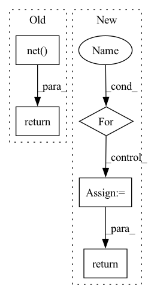

Pattern ID :21454
Before Change
])
self.net = nn.Sequential(*layers)
def forward(self, x):
return self.net( x)
class ViT(nn.Module):
def __init__(self, *, image_size, patch_size, num_classes, dim, depth, heads, mlp_dim, channels = 3):
super().__init__()After Change
Residual(PreNorm(dim, FeedForward(dim, mlp_dim)))
]))
def forward(self, x, mask = None):
for attn, ff in self.layers:
x = attn(x, mask = mask)
x = ff(x)
return x
class ViT(nn.Module):
def __init__(self, *, image_size, patch_size, num_classes, dim, depth, heads, mlp_dim, channels = 3):In pattern: SUPERPATTERN
Frequency: 4
Non-data size: 5
Instances Fragment ID: 68775720
Project Name: lucidrains/vit-pytorch
Commit Name: f7123720c320e2eea815cbd7d41c4bd293fbc75a
Time: 2020-10-07
Author: lucidrains@gmail.com
File Name: vit_pytorch/vit_pytorch.py
M Class Name: Transformer
N Class Name: Transformer
M Method Name: forward(3)
N Method Name: forward(2)
M Parent Class: nn.Module
N Parent Class: nn.Module
M File Name: vit_pytorch/vit_pytorch.py
N File Name: vit_pytorch/vit_pytorch.py
M Start Line: 63
M End Line: 63
N Start Line: 71
N End Line: 75
Before Change
self.net = nn.Sequential(*l)
def forward(self, x): // (B=1, 4, N)
return self.net( x)
class CNNLSTMEncoder(nn.Module):
def __init__(self, n_in, After Change
def forward(self, x): // (B=1, 4, N)
n_in = x.shape[1]
for net in self.net:
x_a = net(x)
n_out = x_a.shape[1]
x = x + x_a if self.resnet and n_in == n_out else x_a
n_in = n_out
return x
class CNNLSTMEncoder(nn.Module): Fragment ID: 68775717
Project Name: mxfold/mxfold2
Commit Name: ebb758a037e14c87b2dadc3ad7dbac32f387a668
Time: 2019-12-03
Author: satoken@bio.keio.ac.jp
File Name: dnnfold/fold/layers.py
M Class Name: CNNLayer
N Class Name: CNNLayer
M Method Name: forward(2)
N Method Name: forward(2)
M Parent Class: nn.Module
N Parent Class: nn.Module
M File Name: dnnfold/fold/layers.py
N File Name: dnnfold/fold/layers.py
M Start Line: 21
M End Line: 21
N Start Line: 22
N End Line: 28
Before Change
)
def forward(self, x: torch.Tensor) -> torch.Tensor:
return self.net( x) After Change
self.output = nn.Linear(width, 1)
def forward(self, x: torch.Tensor) -> torch.Tensor:
for layer in self.linears:
x = f.relu(layer(x))
return self.output(x) Fragment ID: 68775718
Project Name: microsoft/archai
Commit Name: de9f58e7d18749d3dc65f6edada0285fb264dd04
Time: 2022-12-16
Author: dedey@microsoft.com
File Name: archai/nas/predictive_dnn_ensemble.py
M Class Name: FFEnsembleMember
N Class Name: FFEnsembleMember
M Method Name: forward(2)
N Method Name: forward(2)
M Parent Class: nn.Module
N Parent Class: nn.Module
M File Name: archai/nas/predictive_dnn_ensemble.py
N File Name: archai/nas/predictive_dnn_ensemble.py
M Start Line: 106
M End Line: 106
N Start Line: 109
N End Line: 111